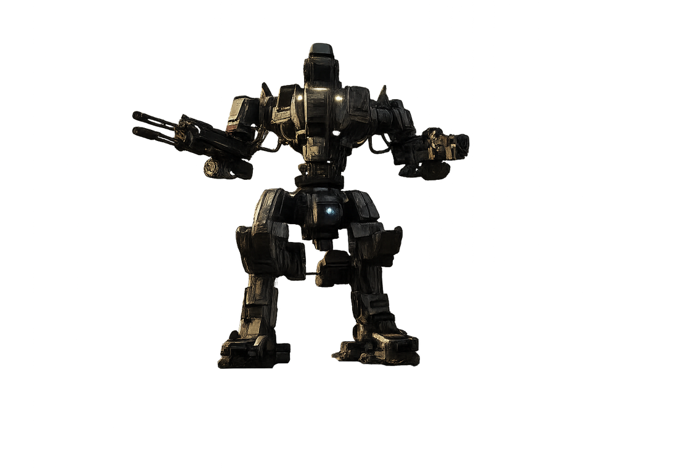

Lorsque les gouvernements se sont effondrés, certaines installations militaires, industrielles et stratégiques ont continué à fonctionner sans intervention humaine.
Leurs systèmes de défense n'ont jamais reçu l'ordre de s'arrêter. Aujourd'hui encore, les Sentinelles patrouillent autour de secteurs dont plus personne ne connaît vraiment les secrets.

Personne ne sait réellement qui les contrôle. Certains affirment qu'elles obéissent encore à une intelligence centrale. D'autres pensent qu'elles ne font qu'exécuter de vieux protocoles militaires.
Une chose est certaine : elles considèrent toujours les intrus comme des menaces.
Les Sentinelles restent dangereuses, mais leur puissance a été ajustée afin de préserver un équilibre RP et éviter les destructions abusives.
| Santé | x0.8 |
| Dégâts généraux | x0.7 |
| Dégâts Railgun | x0.5 |
| Dégâts grenades | x0.5 |
| Dégâts aux bases | Désactivés |
Les Sentinelles sont principalement présentes autour des anciennes zones stratégiques : bunkers, installations militaires, aéroport et secteurs sensibles.
Là où une Sentinelle patrouille, considérez la zone comme une ZDND.
Une ZDND est une Zone de Non Droit. Elle obéit à ses propres règles, expliquées sur la page dédiée.